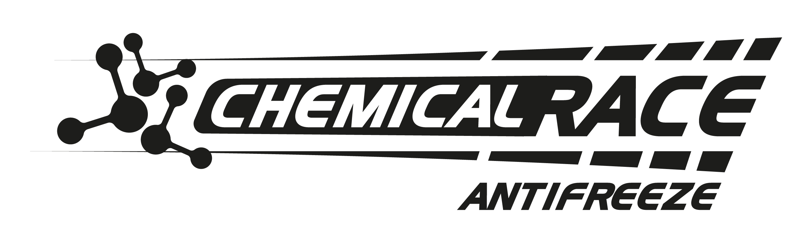
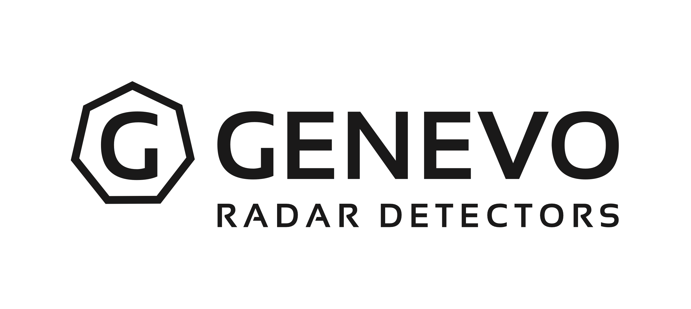
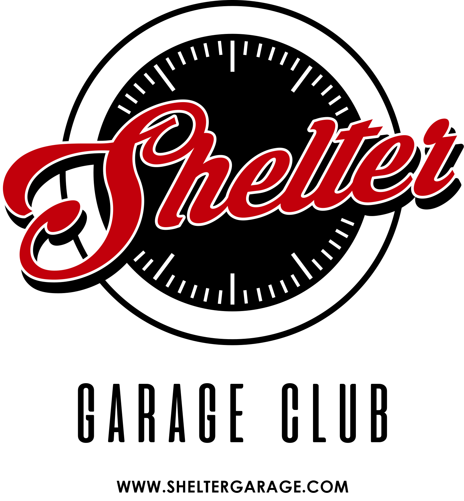
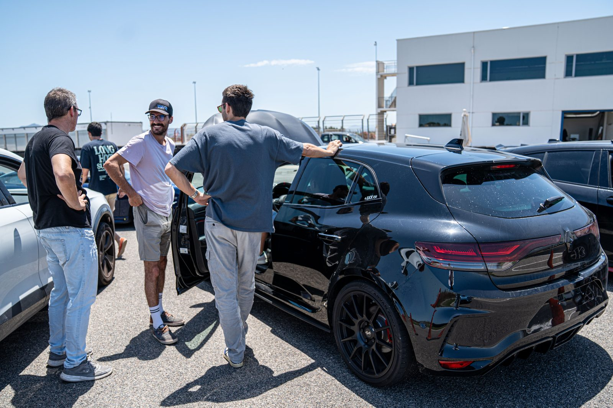
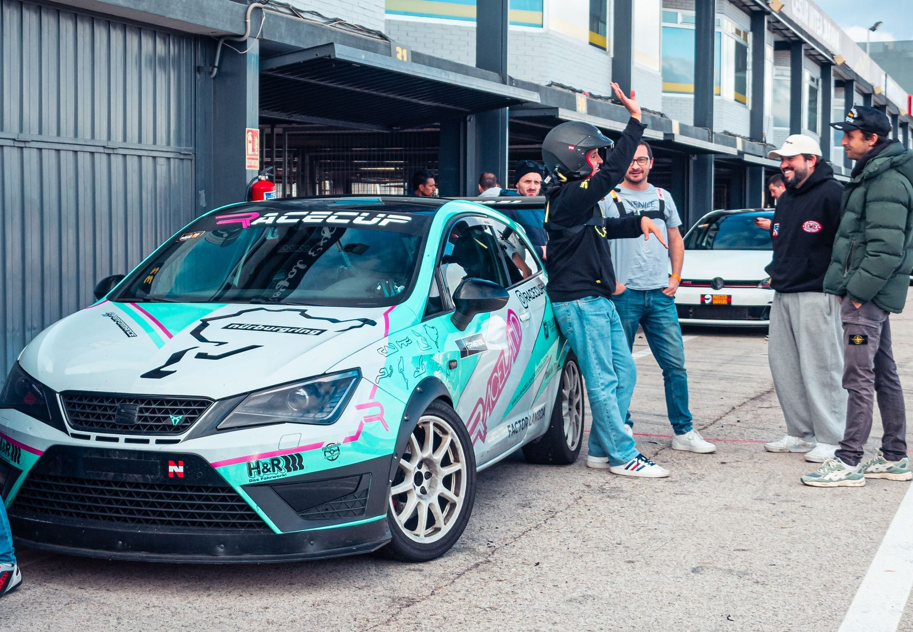

Convierto ideas en proyectos estructurados y proyectos en resultados medibles. Turning ideas into structured projects and projects into measurable results.
Busco una visión rápida de la experiencia, capacidades y resultados profesionales de Carlos. Looking for a quick overview of Carlos' professional experience, capabilities and results.
Ver perfil profesional →View professional profile →Explora sus proyectos, experiencia, intereses y su forma de afrontar los retos. Explore his projects, experience, interests and the way he approaches challenges.
Explorar el portfolio →Explore the portfolio →Mi trayectoria no cabe en una sola etiqueta — y esa combinación es, precisamente, lo que aporto. My path doesn't fit into a single label — and that combination is exactly what I bring.
Mi experiencia profesional se ha construido alrededor de una idea: convertir oportunidades en proyectos reales y mejorar los sistemas que hay detrás de ellos.
My professional experience has been built around one idea: turning opportunities into real projects and improving the systems behind them.
He trabajado en diferentes áreas —gestión de proyectos, operaciones, desarrollo de negocio, eventos y negocio digital— asumiendo responsabilidades sobre equipos, presupuestos, proveedores, clientes y procesos. Esta experiencia me ha permitido desarrollar una visión transversal del negocio: entender el objetivo, estructurar el proyecto, coordinar su ejecución, medir los resultados y buscar continuamente oportunidades de mejora.
I've worked across different areas — project management, operations, business development, events and digital business — taking responsibility for teams, budgets, suppliers, customers and processes. This experience has given me a cross-functional understanding of business: understanding the objective, structuring the project, coordinating execution, measuring results and continuously identifying opportunities for improvement.
En Más4x4 aprendí a leer un negocio a través de sus datos: estructura, tráfico, conversión. Fue mi primer contacto real con la idea de que un sistema bien diseñado vende más que cualquier esfuerzo puntual.
At Más4x4 I learned to read a business through its data: structure, traffic, conversion. It was my first real encounter with the idea that a well-designed system sells more than any one-off effort.
En Tandas Privadas empecé a aplicar esa misma lógica a personas, presupuestos y eventos: pasar de gestionar el día a día a diseñar una operación capaz de escalar sin romperse.
At Tandas Privadas I started applying that same logic to people, budgets and events: moving from managing the day-to-day to designing an operation that could scale without breaking.
Actualmente estoy orientando mi carrera hacia Project Management y Operations, después de desarrollar experiencia transversal en gestión de proyectos, operaciones, desarrollo de negocio, eventos y negocio digital.
I am currently focusing my career on Project Management and Operations, after gaining cross-functional experience across project management, operations, business development, events and digital business.
Estoy complementando mi experiencia práctica con formación específica en Project Management, mejora de procesos y metodologías de gestión, con el objetivo de llevar todo lo aprendido en proyectos reales a un entorno profesional donde pueda seguir creciendo y asumir nuevos retos.
I am complementing my hands-on experience with formal training in Project Management, process improvement and management methodologies, with the goal of bringing what I have learned through real-world projects into a professional environment where I can continue growing and taking on new challenges.
Busco oportunidades donde pueda aportar desde el primer día, aprender rápido y convertir objetivos en proyectos y resultados.
I am looking for opportunities where I can contribute from day one, learn quickly and turn objectives into projects and measurable results.
Busco oportunidades de mejorar, crecer y aportar valor en lugar de esperar a que aparezcan.I look for opportunities to improve, grow and create value rather than waiting for them to appear.
Busco constantemente formas mejores, más simples y eficientes de trabajar.I constantly look for better, simpler and more efficient ways of working.
Me centro en los resultados y el impacto medible, no solo en la actividad.I focus on outcomes and measurable impact, not just activity.
Busco activamente nuevo conocimiento, herramientas y perspectivas para seguir mejorando.I actively seek new knowledge, tools and perspectives to keep improving.
Asumo la responsabilidad de los resultados y me mantengo implicado hasta resolver el problema.I take responsibility for outcomes and stay involved until the problem is solved.
Valoro las soluciones prácticas que funcionan en el mundo real por encima de la complejidad innecesaria.I value practical solutions that work in the real world over unnecessary complexity.
Cuando en Tandas Privadas pasamos de ~40 a más de 60 eventos al año, el reto no era técnico — era de diseño de operación. When Tandas Privadas grew from ~40 to over 60 events a year, the challenge wasn't technical — it was operational design.
Con un equipo base de solo 3 personas, hacer más eventos "a pulmón" habría significado quemar al equipo o bajar la calidad. En vez de eso, redistribuí responsabilidades, renegocié condiciones con circuitos y proveedores, y automaticé las tareas que no necesitaban criterio humano. El resultado no fue solo crecer un 50% en ventas — fue demostrar que el equipo podía absorber ese crecimiento sin que la operación se rompiera por las costuras. With a core team of only 3 people, simply doing more events by brute force would have burned out the team or hurt quality. Instead, I redistributed responsibilities, renegotiated terms with circuits and suppliers, and automated the tasks that didn't need human judgement. The result wasn't just 50% sales growth — it was proving the team could absorb that growth without the operation breaking at the seams.
No es la primera vez que diseño algo desde cero: con 19 años ya había lanzado Kaimur Straps, mi propio proyecto de correas de caucho para relojes, fabricadas a medida para encajar a la perfección en la caja sin alterar el cierre original de cada reloj. It's not the first time I've designed something from scratch: at 19, I had already launched Kaimur Straps, my own project making rubber watch straps, custom-engineered to fit perfectly into the watch case while preserving each watch's original clasp.
En paralelo, estoy construyendo RaceLab, una empresa dedicada a track days y tests de competición para conductores principiantes y experimentados, con un objetivo claro: crecer hasta tener un equipo de carreras oficial a nivel nacional e internacional. RaceLab incluye también una división dedicada exclusivamente al simracing y su formación. In parallel, I'm building RaceLab, a company focused on track days and competition testing for beginner and experienced drivers, with a clear goal: growing into an official national and international racing team. RaceLab also includes a division dedicated exclusively to simracing and simracing training.
Tras una reestructuración de la compañía, pasé de la gestión operativa diaria a este rol de mayor responsabilidad estratégica dentro del consejo. Following a company restructuring, I moved from day-to-day operational management into this role of greater strategic responsibility on the board.
Responsable de la planificación, estrategia comercial y ejecución de la operación de una empresa de eventos de motorsport, coordinando circuitos, patrocinadores, proveedores y equipo.
Responsible for the planning, commercial strategy and execution of a motorsport events business, coordinating circuits, sponsors, suppliers and team.
Gestión y optimización de un e-commerce especializado en accesorios para vehículos 4x4, con más de 15.000 productos sobre WordPress.
Management and optimisation of an e-commerce business specialising in 4x4 accessories, with more than 15,000 products on WordPress.
Escalar el número de eventos, clientes y ventas manteniendo una operación eficiente y evitando que el crecimiento implicase un aumento proporcional de costes y carga de trabajo.
Scale the number of events, customers and sales while maintaining an efficient operation and avoiding a proportional increase in costs and workload.
Escalar no consiste simplemente en hacer más. Consiste en crear una operación capaz de hacer más sin generar proporcionalmente más complejidad. Scaling is not simply about doing more. It is about creating an operation capable of doing more without creating proportionally more complexity.
"Carlos fue una pieza clave en el crecimiento de Tandas Privadas. Destacaría especialmente su capacidad para organizar equipos, resolver problemas y buscar continuamente formas de hacer la operación más eficiente.""Carlos was a key part of Tandas Privadas' growth. I'd especially highlight his ability to organise teams, solve problems and continuously look for ways to make the operation more efficient."





Transformar una web con miles de productos desorganizados en una plataforma de e-commerce más clara, navegable y preparada para generar tráfico y ventas.
Transform a website with thousands of poorly organised products into a clearer, more intuitive e-commerce platform capable of generating traffic and sales.
"Carlos siempre destacó por su iniciativa y su capacidad para detectar problemas y encontrar soluciones. Su trabajo ayudó a mejorar tanto la estructura de la web como diferentes procesos del negocio, siempre con una clara orientación a resultados.""Carlos always stood out for his initiative and his ability to spot problems and find solutions. His work helped improve both the website's structure and various business processes, always with a clear focus on results."
Identificar el problema, la oportunidad, los objetivos y los stakeholders.Identify the problem, opportunity, objectives and stakeholders.
Definir alcance, prioridades, recursos, tiempos y riesgos.Define scope, priorities, resources, timelines and risks.
Coordinar personas, proveedores, recursos y entregables.Coordinate people, suppliers, resources and deliverables.
Analizar KPIs, resultados y desviaciones.Analyse KPIs, results and deviations.
Identificar oportunidades de mejora y optimizar procesos.Identify opportunities for improvement and optimise processes.
Metodología estructurada. Ejecución práctica. Mejora continua. Structured methodology. Hands-on execution. Continuous improvement.
¿Buscas el perfil orientado a resultados y skills? Looking for the results- and skills-oriented profile?
Consulta o descarga mi CV completo para conocer mi experiencia profesional, formación y competencias.
Download my full CV for a detailed overview of my professional experience, education and skills.
¿Quieres conocer mejor a Carlos, más allá de los resultados? Want to know more about Carlos, beyond the results?
¿Buscas un perfil orientado a proyectos, operaciones y desarrollo de negocio? Estoy abierto a nuevas oportunidades profesionales.
Looking for someone with a project, operations and business-oriented mindset? I'm open to new professional opportunities.